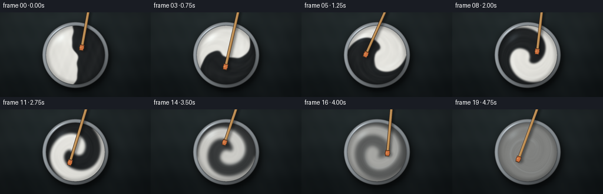
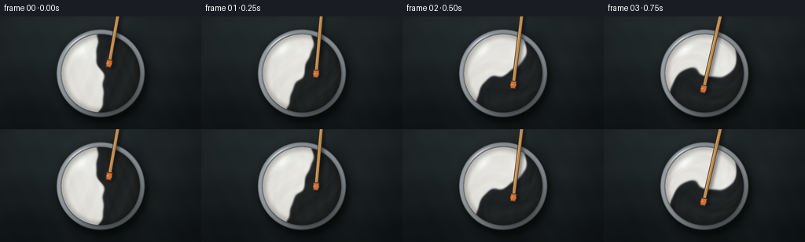
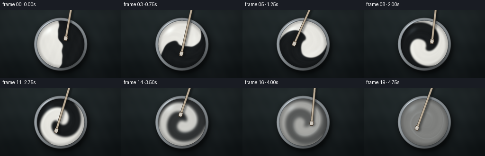
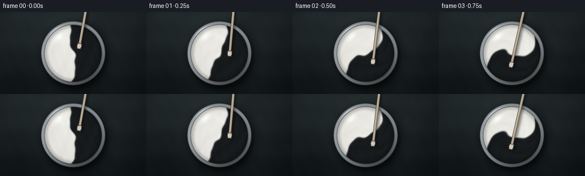

CODING AGENTS AS PIXEL WORLD MODELS
traex/DeepSeek-V4.1-Flash · material_0002
点击播放 · 原生 RGB 像素
逐轮保存的候选
回放视频、检查图与代码变化。
每份候选均可单独播放。实际图片检查记录在下方工具轨迹中。
候选 01播放与检查图
点击播放 · 原生 RGB 像素


展开代码变化
--- 上一保存版本
+++ 本次保存版本
@@ -0,0 +1,346 @@
+from pathlib import Path
+
+import numpy as np
+from PIL import Image, ImageDraw, ImageFilter
+
+from artifact_io import save
+
+
+ROOT = Path(__file__).resolve().parent
+WIDTH, HEIGHT = 256, 144
+FRAMES, FPS = 20, 4.0
+SS = 4
+W, H = WIDTH * SS, HEIGHT * SS
+
+CX, CY = 128.0 * SS, 72.5 * SS
+PAINT_R = 49.8 * SS
+RIM_R = 56.3 * SS
+
+
+def smoothstep(edge0, edge1, value):
+ t = np.clip((value - edge0) / (edge1 - edge0), 0.0, 1.0)
+ return t * t * (3.0 - 2.0 * t)
+
+
+def paint_field(x, y):
+ """Initial equal-area white/black paint charge, in can-normalized coordinates."""
+ boundary = (
+ -0.015
+ + 0.105 * np.sin(3.15 * y + 0.35)
+ + 0.037 * np.sin(8.7 * y + 1.25)
+ + 0.018 * np.cos(14.5 * y - 0.4)
+ )
+ right_is_black = 0.5 * (1.0 + np.tanh((x - boundary) / 0.021))
+
+ texture = (
+ 0.55 * np.sin(10.8 * x + 4.2 * y)
+ + 0.28 * np.sin(22.0 * x - 7.5 * y + 1.3)
+ + 0.17 * np.cos(35.0 * x + 13.0 * y - 0.7)
+ )
+ white_paint = 0.955 + 0.018 * texture
+ black_paint = 0.060 + 0.014 * texture
+ return right_is_black * black_paint + (1.0 - right_is_black) * white_paint
+
+
+def make_background():
+ yy, xx = np.mgrid[0:H, 0:W].astype(np.float32)
+ u = xx / W
+ v = yy / H
+
+ top = np.array([31.0, 38.0, 40.0], dtype=np.float32)
+ bottom = np.array([17.0, 22.0, 24.0], dtype=np.float32)
+ image = top[None, None, :] * (1.0 - v[..., None]) + bottom[None, None, :] * v[..., None]
+
+ glow = 12.0 * np.exp(-(((u - 0.33) / 0.44) ** 2 + ((v - 0.20) / 0.55) ** 2))
+ image += glow[..., None] * np.array([0.72, 0.88, 0.84], dtype=np.float32)
+
+ grain = (
+ 1.7 * np.sin(0.015 * xx + 0.0045 * yy + 0.9 * np.sin(0.006 * yy))
+ + 1.1 * np.sin(0.036 * yy + 0.7 * np.sin(0.012 * xx))
+ + 0.55 * np.sin(0.061 * xx - 0.028 * yy + 2.1)
+ )
+ image += grain[..., None]
+
+ nx = (xx - W * 0.5) / (W * 0.5)
+ ny = (yy - H * 0.5) / (H * 0.5)
+ vignette = 1.0 - 0.13 * np.clip(nx * nx + 0.7 * ny * ny, 0.0, 1.8)
+ image *= vignette[..., None]
+ return image
+
+
+def make_can_layers():
+ yy, xx = np.mgrid[0:H, 0:W].astype(np.float32)
+ dx, dy = xx - CX, yy - CY
+ radius = np.hypot(dx, dy)
+ theta = np.arctan2(dy, dx)
+
+ paint_mask = radius <= PAINT_R
+ outer_mask = radius <= RIM_R
+ rim_mask = outer_mask & ~paint_mask
+
+ shadow_mask = (radius <= RIM_R * 1.025).astype(np.uint8) * 255
+ shadow_image = Image.fromarray(shadow_mask)
+ shadow_image = shadow_image.transform(
+ shadow_image.size,
+ Image.Transform.AFFINE,
+ (1.0, 0.0, -3.2 * SS, 0.0, 1.0, -5.2 * SS),
+ resample=Image.Resampling.BILINEAR,
+ )
+ shadow_soft = np.asarray(
+ shadow_image.filter(ImageFilter.GaussianBlur(8.5 * SS)), dtype=np.float32
+ ) / 255.0
+ shadow_tight = np.asarray(
+ shadow_image.filter(ImageFilter.GaussianBlur(2.1 * SS)), dtype=np.float32
+ ) / 255.0
+
+ rim_t = np.clip((radius - PAINT_R) / (RIM_R - PAINT_R), 0.0, 1.0)
+ metal = (
+ 111.0
+ + 33.0 * np.cos(theta + 2.25)
+ + 15.0 * np.cos(2.0 * theta + 0.7)
+ + 18.0 * np.sin(np.pi * rim_t)
+ )
+ metal += 30.0 * np.exp(-(((rim_t - 0.12) / 0.08) ** 2))
+ metal -= 30.0 * np.exp(-(((rim_t - 0.94) / 0.075) ** 2))
+ metal_spec = (
+ 82.0
+ * np.exp(-(((theta + 2.22) / 0.33) ** 2))
+ * np.exp(-(((rim_t - 0.35) / 0.17) ** 2))
+ )
+ metal += metal_spec
+ rim_rgb = np.stack(
+ (metal * 0.94, metal * 0.985, metal * 1.015), axis=-1
+ ).astype(np.float32)
+
+ outer_edge = smoothstep(RIM_R - 1.2 * SS, RIM_R, radius)
+ rim_rgb *= (1.0 - 0.38 * outer_edge[..., None])
+
+ inner_lip = (
+ np.exp(-(((radius - PAINT_R) / (1.35 * SS)) ** 2))
+ * (radius >= PAINT_R - 0.6 * SS)
+ )
+ rim_rgb *= 1.0 - 0.42 * inner_lip[..., None]
+
+ return {
+ "paint_mask": paint_mask,
+ "rim_mask": rim_mask,
+ "rim_rgb": rim_rgb,
+ "shadow_soft": shadow_soft,
+ "shadow_tight": shadow_tight,
+ "radius": radius,
+ "theta": theta,
+ }
+
+
+def mixed_paint(frame_index, layers):
+ t = frame_index / (FRAMES - 1)
+ radius = layers["radius"]
+ theta = layers["theta"]
+ rn = np.clip(radius / PAINT_R, 0.0, 1.0)
+
+ # Differential rotation wraps the two paint volumes into progressively
+ # tighter spiral bands. A small radial wave folds the bands as they turn.
+ rotation = (
+ 2.0 * np.pi * 2.55 * t * (1.0 - 0.60 * rn**1.35)
+ + 0.16 * t * np.sin(3.0 * theta + 1.7 * t * 2.0 * np.pi)
+ )
+ source_theta = theta - rotation
+ source_r = rn * (
+ 1.0 + 0.055 * t * np.sin(4.0 * theta - 2.0 * t * 2.0 * np.pi)
+ )
+ source_x = source_r * np.cos(source_theta)
+ source_y = source_r * np.sin(source_theta)
+
+ concentration = paint_field(source_x, source_y)
+ concentration_8 = np.clip(concentration * 255.0, 0, 255).astype(np.uint8)
+ blur_radius = (0.35 + 3.2 * t**1.35) * SS
+ concentration_8 = np.asarray(
+ Image.fromarray(concentration_8).filter(
+ ImageFilter.GaussianBlur(blur_radius)
+ ),
+ dtype=np.float32,
+ ) / 255.0
+
+ blend = 0.992 * smoothstep(0.54, 1.0, t) ** 1.5
+ concentration = concentration_8 * (1.0 - blend) + 0.5 * blend
+
+ fine_texture = (
+ 0.0045 * np.sin(19.0 * source_x + 8.0 * source_y + 0.8)
+ + 0.0025 * np.cos(31.0 * source_x - 12.0 * source_y)
+ )
+ concentration = np.clip(concentration + fine_texture, 0.0, 1.0)
+
+ black = np.array([19.0, 22.0, 24.0], dtype=np.float32)
+ white = np.array([241.0, 240.0, 234.0], dtype=np.float32)
+ paint_rgb = black[None, None, :] + concentration[..., None] * (
+ white - black
+ )[None, None, :]
+
+ edge_shade = smoothstep(0.82, 1.0, rn)
+ paint_rgb *= (1.0 - 0.20 * edge_shade[..., None])
+
+ top_light = 1.0 - 0.035 * rn[..., None] + 0.012 * (
+ -np.sin(theta) * rn
+ )[..., None]
+ paint_rgb *= top_light
+
+ broad_sheen = (
+ 12.0
+ * np.exp(-(((source_x + 0.28) / 0.43) ** 2 + ((source_y + 0.48) / 0.15) ** 2))
+ * (0.55 + 0.45 * t)
+ )
+ paint_rgb += broad_sheen[..., None] * np.array(
+ [0.82, 0.94, 1.0], dtype=np.float32
+ )
+
+ arc_sheen = (
+ 24.0
+ * np.exp(-(((theta + 2.28) / 0.28) ** 2))
+ * np.exp(-(((rn - 0.77) / 0.10) ** 2))
+ )
+ paint_rgb += arc_sheen[..., None] * np.array(
+ [0.80, 0.92, 1.0], dtype=np.float32
+ )
+
+ ripple = (
+ 1.8
+ * t
+ * np.sin(21.0 * rn - 4.0 * t * 2.0 * np.pi + 2.0 * theta)
+ * smoothstep(0.1, 0.9, rn)
+ )
+ paint_rgb += ripple[..., None]
+ return np.clip(paint_rgb, 0.0, 255.0)
+
+
+def add_stirrer(image, frame_index):
+ t = frame_index / (FRAMES - 1)
+ angle = -0.92 + 2.0 * np.pi * 2.55 * t
+ tip_radius = 18.2 * SS
+ tip = np.array(
+ [CX + tip_radius * np.cos(angle), CY + tip_radius * np.sin(angle)],
+ dtype=np.float32,
+ )
+ anchor = np.array([CX + 27.0 * SS, -31.0 * SS], dtype=np.float32)
+ direction = tip - anchor
+ direction /= np.linalg.norm(direction)
+ normal = np.array([-direction[1], direction[0]], dtype=np.float32)
+
+ shadow = Image.new("RGBA", (W, H), (0, 0, 0, 0))
+ sd = ImageDraw.Draw(shadow)
+ shadow_offset = np.array([2.5 * SS, 3.7 * SS], dtype=np.float32)
+ sd.line(
+ [tuple(anchor + shadow_offset), tuple(tip + shadow_offset)],
+ fill=(6, 8, 8, 115),
+ width=int(6.2 * SS),
+ )
+ sd.ellipse(
+ (
+ tip[0] + shadow_offset[0] - 5.4 * SS,
+ tip[1] + shadow_offset[1] - 5.4 * SS,
+ tip[0] + shadow_offset[0] + 5.4 * SS,
+ tip[1] + shadow_offset[1] + 5.4 * SS,
+ ),
+ fill=(6, 8, 8, 105),
+ )
+ shadow = shadow.filter(ImageFilter.GaussianBlur(2.0 * SS))
+ image = Image.alpha_composite(image.convert("RGBA"), shadow)
+
+ rod = Image.new("RGBA", (W, H), (0, 0, 0, 0))
+ draw = ImageDraw.Draw(rod)
+ draw.line(
+ [tuple(anchor), tuple(tip)],
+ fill=(70, 45, 27, 255),
+ width=int(5.0 * SS),
+ )
+ draw.line(
+ [tuple(anchor), tuple(tip)],
+ fill=(187, 139, 80, 255),
+ width=int(3.55 * SS),
+ )
+ highlight_offset = normal * (0.9 * SS)
+ draw.line(
+ [tuple(anchor + highlight_offset), tuple(tip + highlight_offset)],
+ fill=(244, 203, 140, 210),
+ width=max(2, int(0.72 * SS)),
+ )
+
+ head_center = tip + direction * (2.1 * SS)
+ long_axis = 5.2 * SS
+ half_width = 4.0 * SS
+ polygon = [
+ tuple(head_center - direction * long_axis - normal * half_width),
+ tuple(head_center - direction * long_axis + normal * half_width),
+ tuple(head_center + direction * long_axis + normal * half_width * 0.84),
+ tuple(head_center + direction * long_axis - normal * half_width * 0.84),
+ ]
+ draw.polygon(polygon, fill=(79, 48, 28, 255))
+ draw.ellipse(
+ (
+ head_center[0] - 4.3 * SS,
+ head_center[1] - 4.3 * SS,
+ head_center[0] + 4.3 * SS,
+ head_center[1] + 4.3 * SS,
+ ),
+ fill=(79, 48, 28, 255),
+ )
+
+ inner_head = [
+ tuple(head_center - direction * (4.1 * SS) - normal * (3.1 * SS)),
+ tuple(head_center - direction * (4.1 * SS) + normal * (3.1 * SS)),
+ tuple(head_center + direction * (4.0 * SS) + normal * (2.5 * SS)),
+ tuple(head_center + direction * (4.0 * SS) - normal * (2.5 * SS)),
+ ]
+ draw.polygon(inner_head, fill=(205, 112, 61, 255))
+ draw.ellipse(
+ (
+ head_center[0] - 3.4 * SS,
+ head_center[1] - 3.4 * SS,
+ head_center[0] + 3.4 * SS,
+ head_center[1] + 3.4 * SS,
+ ),
+ fill=(205, 112, 61, 255),
+ )
+
+ head_glint = head_center - direction * (0.4 * SS) + normal * (1.5 * SS)
+ draw.ellipse(
+ (
+ head_glint[0] - 1.1 * SS,
+ head_glint[1] - 0.55 * SS,
+ head_glint[0] + 1.5 * SS,
+ head_glint[1] + 0.55 * SS,
+ ),
+ fill=(250, 188, 116, 215),
+ )
+ return Image.alpha_composite(image, rod)
+
+
+def render():
+ background = make_background()
+ layers = make_can_layers()
+
+ shadow_soft = layers["shadow_soft"]
+ shadow_tight = layers["shadow_tight"]
+ base = background * (1.0 - 0.58 * shadow_soft[..., None])
+ base *= 1.0 - 0.24 * shadow_tight[..., None]
+
+ rim_mask = layers["rim_mask"]
+ base[rim_mask] = layers["rim_rgb"][rim_mask]
+
+ paint_mask = layers["paint_mask"]
+ frames = []
+ for frame_index in range(FRAMES):
+ image_array = base.copy()
+ image_array[paint_mask] = mixed_paint(frame_index, layers)[paint_mask]
+ image = Image.fromarray(np.clip(image_array, 0, 255).astype(np.uint8), "RGB")
+ image = add_stirrer(image, frame_index)
+ image = image.convert("RGB").resize(
+ (WIDTH, HEIGHT), Image.Resampling.LANCZOS
+ )
+ frames.append(np.asarray(image, dtype=np.uint8))
+
+ return np.stack(frames, axis=0)
+
+
+if __name__ == "__main__":
+ frames = render()
+ save(frames, ROOT)
候选 02播放与检查图
点击播放 · 原生 RGB 像素


展开代码变化
--- 上一保存版本
+++ 本次保存版本
@@ -37,8 +37,8 @@
+ 0.28 * np.sin(22.0 * x - 7.5 * y + 1.3)
+ 0.17 * np.cos(35.0 * x + 13.0 * y - 0.7)
)
- white_paint = 0.955 + 0.018 * texture
- black_paint = 0.060 + 0.014 * texture
+ white_paint = 0.975 + 0.014 * texture
+ black_paint = 0.025 + 0.010 * texture
return right_is_black * black_paint + (1.0 - right_is_black) * white_paint
@@ -161,12 +161,12 @@
dtype=np.float32,
) / 255.0
- blend = 0.992 * smoothstep(0.54, 1.0, t) ** 1.5
+ blend = 0.985 * smoothstep(0.54, 1.0, t) ** 1.5
concentration = concentration_8 * (1.0 - blend) + 0.5 * blend
fine_texture = (
- 0.0045 * np.sin(19.0 * source_x + 8.0 * source_y + 0.8)
- + 0.0025 * np.cos(31.0 * source_x - 12.0 * source_y)
+ 0.0022 * np.sin(19.0 * source_x + 8.0 * source_y + 0.8)
+ + 0.0012 * np.cos(31.0 * source_x - 12.0 * source_y)
)
concentration = np.clip(concentration + fine_texture, 0.0, 1.0)
@@ -249,18 +249,18 @@
draw = ImageDraw.Draw(rod)
draw.line(
[tuple(anchor), tuple(tip)],
- fill=(70, 45, 27, 255),
+ fill=(66, 57, 47, 255),
width=int(5.0 * SS),
)
draw.line(
[tuple(anchor), tuple(tip)],
- fill=(187, 139, 80, 255),
+ fill=(178, 164, 143, 255),
width=int(3.55 * SS),
)
highlight_offset = normal * (0.9 * SS)
draw.line(
[tuple(anchor + highlight_offset), tuple(tip + highlight_offset)],
- fill=(244, 203, 140, 210),
+ fill=(236, 225, 207, 210),
width=max(2, int(0.72 * SS)),
)
@@ -273,7 +273,7 @@
tuple(head_center + direction * long_axis + normal * half_width * 0.84),
tuple(head_center + direction * long_axis - normal * half_width * 0.84),
]
- draw.polygon(polygon, fill=(79, 48, 28, 255))
+ draw.polygon(polygon, fill=(80, 66, 52, 255))
draw.ellipse(
(
head_center[0] - 4.3 * SS,
@@ -281,7 +281,7 @@
head_center[0] + 4.3 * SS,
head_center[1] + 4.3 * SS,
),
- fill=(79, 48, 28, 255),
+ fill=(80, 66, 52, 255),
)
inner_head = [
@@ -290,7 +290,7 @@
tuple(head_center + direction * (4.0 * SS) + normal * (2.5 * SS)),
tuple(head_center + direction * (4.0 * SS) - normal * (2.5 * SS)),
]
- draw.polygon(inner_head, fill=(205, 112, 61, 255))
+ draw.polygon(inner_head, fill=(204, 198, 188, 255))
draw.ellipse(
(
head_center[0] - 3.4 * SS,
@@ -298,7 +298,7 @@
head_center[0] + 3.4 * SS,
head_center[1] + 3.4 * SS,
),
- fill=(205, 112, 61, 255),
+ fill=(204, 198, 188, 255),
)
head_glint = head_center - direction * (0.4 * SS) + normal * (1.5 * SS)
@@ -309,7 +309,7 @@
head_glint[0] + 1.5 * SS,
head_glint[1] + 0.55 * SS,
),
- fill=(250, 188, 116, 215),
+ fill=(247, 244, 236, 215),
)
return Image.alpha_composite(image, rod)
@@ -331,7 +331,7 @@
for frame_index in range(FRAMES):
image_array = base.copy()
image_array[paint_mask] = mixed_paint(frame_index, layers)[paint_mask]
- image = Image.fromarray(np.clip(image_array, 0, 255).astype(np.uint8), "RGB")
+ image = Image.fromarray(np.clip(image_array, 0, 255).astype(np.uint8))
image = add_stirrer(image, frame_index)
image = image.convert("RGB").resize(
(WIDTH, HEIGHT), Image.Resampling.LANCZOS
可观测工具轨迹
实际执行的命令与返回图片。
命令 1exit 0
/bin/bash -c "pwd && rg --files -g 'prompt.txt' -g 'GENERATION_RULES.md' -g 'task_spec.json' -g '"'!**/.git/**'"'"
命令 2exit 0
/bin/bash -c 'ls -la'
命令 3exit 0
/bin/bash -c 'cat prompt.txt'
命令 4exit 0
/bin/bash -c 'cat GENERATION_RULES.md'
命令 5exit 0
/bin/bash -c 'cat task_spec.json'
命令 6exit 0
/bin/bash -c "sed -n '1,260p' artifact_io.py && sed -n '1,220p' player_template.html"
命令 7exit 0
/bin/bash -c 'python generate.py'
命令 8exit 0
/bin/bash -c 'ls -lh frames inspection.png transition_check.png pixels.npz index.html'
命令 9exit 0
/bin/bash -c 'command -v chafa || command -v viu || command -v jp2 || command -v img2txt || true'
命令 10exit 0
/bin/bash -c "python - <<'PY'
from PIL import Image
import numpy as np
for i in [0,4,9,14,19]:
a=np.array(Image.open(f'frames/{i:02d}.png'))
# paint crop stats
c=a[23:123,78:178]
print(i, 'mean', a.mean((0,1)).round(1), 'std', a.std((0,1)).round(1), 'center_mean', c.mean((0,1)).round(1), 'center_std', c.std((0,1)).round(1))
PY"命令 11exit 0
/bin/bash -c "python - <<'PY'
from PIL import Image, ImageOps, ImageEnhance
chars='@%#*+=-:. '
for idx in [0,5,10,15,19]:
im=Image.open(f'frames/{idx:02d}.png').convert('L').resize((64,36))
print('\\nFRAME',idx)
p=list(im.getdata())
for y in range(36):
print(''.join(chars[min(9,v*10//256)] for v in p[y*64:(y+1)*64]))
PY"命令 12exit 0
/bin/bash -c "python - <<'PY'
from PIL import Image
import numpy as np
for i in [0,4,9,14,19]:
a=np.array(Image.open(f'frames/{i:02d}.png')).astype(float)
yy,xx=np.mgrid[:144,:256]
rr=np.hypot(xx-128,yy-72.5)
p=a[rr<45]
print(i, 'paint mean',p.mean(0).round(1),'p10/50/90',np.percentile(p,[10,50,90],axis=0).round(0).astype(int).tolist())
PY"命令 13exit 0
/bin/bash -c 'python generate.py'
命令 14exit 0
/bin/bash -c "python - <<'PY'
from PIL import Image
import numpy as np
from pathlib import Path
spec=__import__('json').loads(Path('task_spec.json').read_text())
files=sorted(Path('frames').glob('*.png'))
frames=[np.array(Image.open(f)) for f in files]
a=np.stack(frames)
print('frames',len(files),'shape',a.shape,'dtype',a.dtype)
print('finite/rgb', a.min(), a.max())
print('mean luminance', [round(float(f.mean()),1) for f in frames])
print('adjacent MAE', [round(float(np.abs(frames[i].astype(float)-frames[i-1]).mean()),2) for i in range(1,len(frames))])
yy,xx=np.mgrid[:144,:256]; rr=np.hypot(xx-128,yy-72.5)
for i in [0,5,10,15,19]:
p=frames[i][rr<45].astype(float)
print(i,'paint mean/std',p.mean(0).round(1),p.std(0).round(1),'p5/50/95',np.percentile(p,[5,50,95],axis=0).round(0).astype(int).tolist())
print('outputs',[(f.name,f.stat().st_size) for f in [Path('pixels.npz'),Path('index.html'),Path('inspection.png')]])
PY"保存候选 2 份；完成命令 14 次；可验证图片返回 0 张。原始 API 响应与完整日志保留在本地。